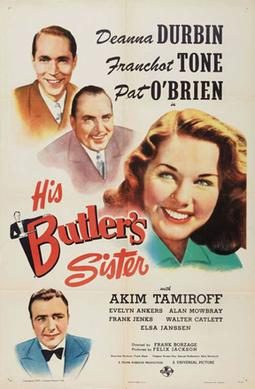

His Butler's Sister
Starring: Deanna Durbin, Pat O'Brien, Franchot Tone
Director: Frank Borzage
Writer: Samuel Hoffenstein
Producer: Felix Jackson

His Butler's Sister is a 1943 American romantic comedy film directed by Frank Borzage and starring Deanna Durbin. The supporting cast includes Franchot Tone, Pat O'Brien, Akim Tamiroff, Evelyn Ankers and Hans Conried. The film was nominated for an Oscar for Best Sound Recording (Bernard B. Brown).
Trivia
- Nominated for: Academy Award for Best Sound.
- In April, Frank Borzage signed to direct and Pat O'Brien to star.
- In May, Franchot Tone signed to play the male lead.
- The film was then titled My Girl Godfrey.
Previous Showings
3 Runs • 3 Festivals
1,576 tickets sold
All runs on record (3):
- December 21 - 23, 2012 · 854 ticketsDeanna Durbin Festivalw/ Christmas Holiday
- September 1 - 2, 2014 · 299 ticketsSummer 2014w/ Strike Up the Band
- December 7 - 8, 2023 · 423 ticketsHoliday Favorites plus Deanna Durbinw/ Remember the Night